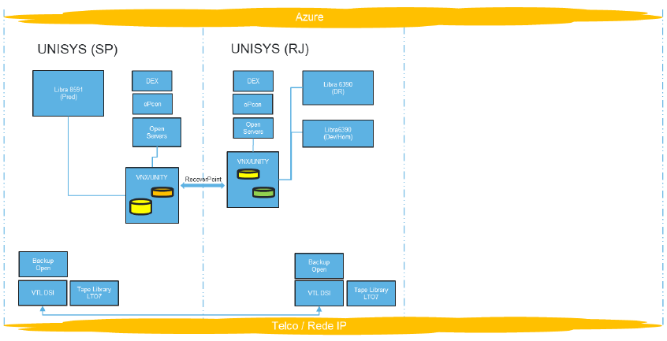
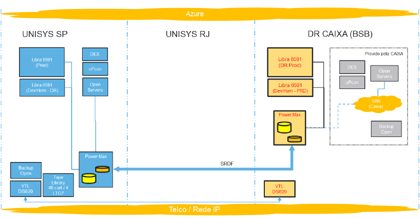
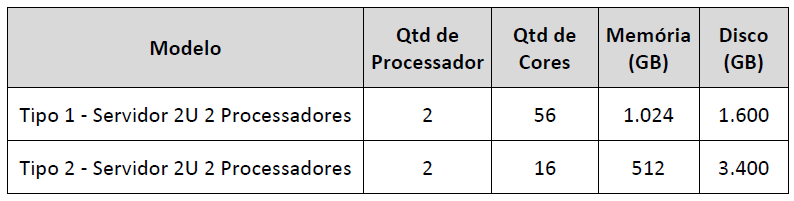
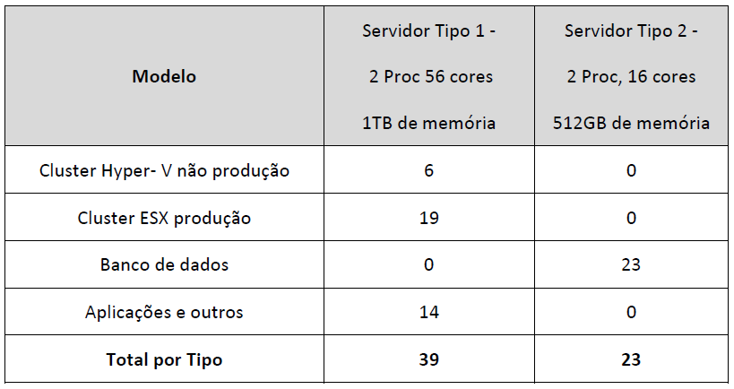
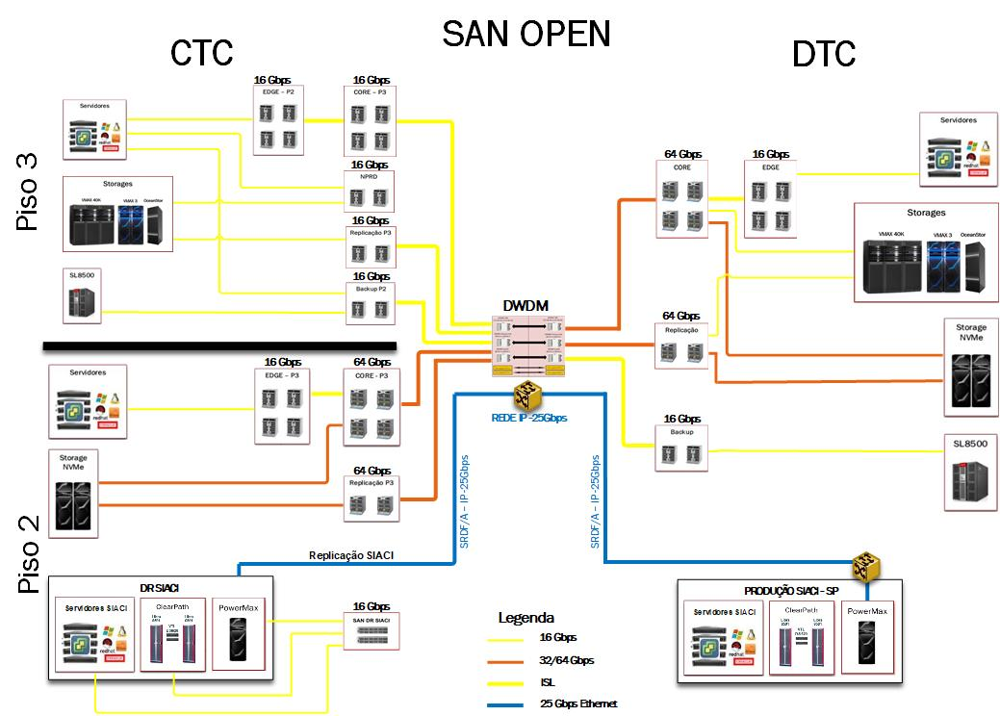

Arquitetura de referência UNISYS.
Topologia
A seguir é apresentado um diagrama simplificado de como se encontra o ambiente atual na UNISYS e como ficará o ambiente com a implementação da nova infraestrutura na CAIXA.
- Topologia atual do ambiente na UNISYS

- Topologia final do ambiente UNISYS + CAIXA

Processamento
Ambiente de Alta Plataforma - ClearPath Libra
A arquitetura proposta para o ambiente UNISYS ClearPath Libra, leva em consideração uma topologia de alta disponibilidade (HA -- High Availabilty) para os ambientes de Produção e NPRD (Desenvolvimento/Homologação), utilizando os mesmos modelos de equipamentos físicos do site principal, nas dependências da UNISYS em São Paulo;
O ambiente ClearPath Libra 8591 é dimensionado para suportar o ambiente de contingência (Disaster Recovery) da produção que é executado na UNISYS, inclui um pacote de BC Metering MIPS, para operação do ambiente em modalidade WARM Business Continuance;
O ambiente ClearPath Libra 6591 é dimensionado para suportar o ambiente de NPRD (Desenvolvimento/Homologação), contempla um pacote de Metering MIPS para sua operação. O pacote de MIPS proposto é para uso em produção.
Ambiente x86
Foram definidos 2 Tipos de servidores, sendo eles:

- O servidor Tipo 1, de maior capacidade de processamento, é recomendado para uso com virtualização VMWARE e Hyper-V, e o servidor Tipo 2 é recomendado para uso de banco de dados baremetal/standalone.
A quantidade de servidores físicos necessários para a criação do ambiente de DR na Caixa será de 62 servidores, distribuídos em:

BACKUP
BACKUP Open
Será utilizada a recém adquirida solução de backup multiplataforma DELL Data Protection Suite Enterprise Edition através do contrato 3.466/2022.
- Software: DELL POWER PROTECT ENTERPRISE EDITION
As ferramentas que fazem parte do pacote DELL Data Protection Suite Enterprise Edition são:
- Avamar;
- Networker;
- Protectpoint;
- DD Boost for Applications;
- Recoverpoint for virtual machines;
- Data Protection Advisor;
- Enterprise Copy Data Management;
- Sourceone for e-mails, files and MS Sharepoint;
- Cloudboost;
-
Data Protection Search.
-
Hardware: DELL DATA DOMAIN DD9900, ECS Elastic Cloud Storage EX500 e VxRail E660F
A nova solução de backup open (tapeless), é baseada somente em armazenamento em disco, assim não existirá mais salvaguardas em fita magnética.
A nova solução foi dividida em duas camadas de armazenamento:
- Camada 1 - Appliance de Backup
É também chamada de camada de curta retenção, foi especificada com o objetivo de armazenar os dados de backup com retenção de até 30 dias;
É composta por appliances customizados para executar as funcionalidades de armazenamento, backup e restore, estes equipamentos são os responsáveis por executar o software de backup, armazenar o banco de dados com informações de políticas e ainda os dados já protegidos pela solução;
São nestes appliances que os dados de backup serão comprimidos e desduplicados e ficarão armazenados por até 30 dias, após este prazo os dados serão movidos automaticamente conforme definido em política de backup para os equipamentos que compõe a camada 2 que é a camada de longa retenção, ainda existe a possibilidade desses dados de longa retenção serem enviados para nuvem pública caso venha a existir esta definição;
O modelo de equipamento que compõe a Camada 1 da solução de backup CAIXA é o DELL Power Protect Data Domain DD9900 - Appliance especializado para backup em disco, garantindo alta performance de gravação (backup) e leitura (recovery) dos dados armazenados na solução. Possui tecnologias de compressão e desduplicação para redução do volume de dados que são gravados nos discos.
- Camada 2 -- Object Storage
Também chamada de camada de longa retenção, porque o seu objetivo é armazenar os dados de backup com retenção superior a 30 dias;
É composta por storages do tipo objeto que armazenam os arquivos em forma de objetos, possuem funcionalidades de desduplicação o que reduz a quantidades de objetos armazenados aumentando assim a sua capacidade final de armazenamento;
O modelo de equipamento que compõe a Camada 2 da solução de backup CAIXA é o DELL ECS Elastic Cloud Storage EX500 - É um storage do tipo Object que armazena arquivos em forma de objetos, utilizando os protocolos mais comuns disponíveis em nuvens públicas, como S3, SWIFT e REST, e são dotados de tecnologias assistidas por IA (Inteligência Artificial) para desduplicar e reduzir o volume de dados armazenados nos discos;
Faz parte da suíte de backup adquirida pela CAIXA o Networker que é compatível com a solução de backup utilizada nos ambientes do SIACI em SP e RJ;
Para utilizarmos a nova solução de backup da CAIXA para atender o ambiente do SIACI será preciso apenas a criação de um servidor de backup ou mídia server que será responsável pelas configurações de políticas e Jobs de backup do ambiente do SIACI;
O backup do ambiente DR do SIACI servirá para proteger os servidores físicos e virtuais das plataformas open (x86) e mainframes ClearPath Libra;
- Fazer backup dos servidores virtuais e físicos.
- Fazer backup das bases de dados Oracle e MS SQL.
- O object storage ECS EX500 (camada 2) da solução de backup poderá ser utilizada como repositório de armazenamento de longa retenção para os ClearPath libras 8591 e 6591 sendo interligada a VTL DSI620.
BACKUP VTL
Será utilizado 01 (um) sistema de backup VTL DSI620 para atender aos ambientes ClearPath Libra 8591 e ClearPath Libra 6591, conforme detalhamento abaixo:
- 02 controladoras VTL DSI620 Enterprise.
- 02 módulos de deduplicação.
- 01 módulo de gerenciamento
- 02 módulos de armazenamento, totalizando 96TB de capacidade para gravação das fitas virtuais.
| Equipamento | Quantidade |
|---|---|
| DSI620101-EV0 (Enterprise VTL Node) | 02 |
| DSI620101-EVD (Enterprise Deduplication Node) | 02 |
| DSI5400141-FEM (Enterprise Base Storage Module 48TB) | 01 |
| DSI5400141-SEM (Enterprise Expansion Storage Module 48TB) | 01 |
| DSI620-SS1 (Management Console -- HW) | 01 |
Topologia BACKUP SIACI CAIXA|

Softwares
Plataforma Alta
Serão utilizadas as seguintes licenças de uso dos programas de computador abaixo descritos, em caráter individual, intransferível e não exclusivo.
- Pacote de Metering MIPS;
- Pacote Integrado de Softwares UNISYS MCP;
- EOM - Enterprise Output Manager;
- TeamQuest (performance monitor);
- DBATools Library (database analisys tool);
- BCA - Business Continuance Accelerator;
- DataExchange;
- Locum (security and access analisys tool);
- Stealth;
- OpCon (Process Automation tool);
- MCP Attach TapeManager;
- MCP Robotics LibraryManager.
Softwares do Subsistema de Backup
Serão utilizadas as seguintes licenças de uso dos programas de computador abaixo descritos, em caráter individual, intransferível e não exclusivo:
- Licença de deduplicação para 96TB de capacidade;
- Licença de replicação IP;
- Licença Tape Consolidation;
- Licença para Tape Encryption;
- Enterprise VTL Agent;
- Enterprise MCP Host Attach.
Plataforma Baixa
Abaixo estão listados os softwares relacionados à estratégia de utilização e aquisição de software do ambiente baixa plataforma necessários para subsidiar a internalização da SIACI - Solução de Gestão de Crédito Imobiliário, com instalação do ambiente de contingência Produção DR -- Disaster Recover e do ambiente de processamento principal NPRD (Homologação/Desenvolvimento) do SIACI no CTC - Complexo Tecnológico CAIXA.
|
Categoria |
Software |
Versão |
|
SO / Virtualizador |
Red Hat Enterprise Linux |
5 |
|
Centos |
7 |
|
|
Ubuntu |
19 |
|
|
Vmware |
7.x |
|
|
Windows Server |
2019 |
|
|
Windows Estações |
10 |
|
|
Debian |
9 |
|
|
Produtos de Infraestrutura |
Opcon |
--- |
|
Axway Transfer CFT |
--- |
|
|
Cobol Net Express |
5.1 |
|
|
Office Professional |
Office 365 |
|
|
Tableau |
Nuvem |
|
|
IBM Websphere MQ P/N:D55V2LL |
9.3 |
|
|
Servidores de SMTP |
--- |
|
|
Servidores FTP |
--- |
|
|
Puppet |
2.0 |
|
|
Windows Remote Desktop |
Vários |
|
|
SGBD |
Oracle |
19 |
|
MySQL |
8 |
|
|
Microsoft SQL |
2019 |
|
|
Mongo |
6 |
|
|
Armazenamento |
Legato networker |
Power Protect Enterprise |
|
Backup |
Tape manager & Library manager |
--- |
|
Data Protection Suite DDVE Bundle |
Power Protect Enterprise |
|
|
Servidor de |
JBOSS |
4.0/4.2/4,3/5.0/6.2 |
|
Angular |
7 |
|
|
MediaWiki |
Não será utilizado |
|
|
Gitlab |
GitAzure |
|
|
Nexus OSS |
3.21.1-0 |
|
|
Baretail |
Não será utilizado |
|
|
Portainer |
1.24 |
|
|
Apache |
2.4.46 |
|
|
Jenkins |
1651 |
|
|
cygwin |
2.8.3 ou superior |
|
|
Java |
Java Oracle Versões 4.2, 5.0, 5.2 e 6.0 |
|
|
Docker |
17.05.0ce / 19.03.8 / 18.06.0ce |
|
|
SubVersion |
14.0.12 |
|
|
Git |
GitAzure |
|
|
Azure Devops |
--- |
|
|
Wso2 |
C.A. |
|
|
Python |
3.10 |
|
|
RunDeck |
--- |
|
|
IIS |
--- |
|
|
HAProxy |
--- |
|
|
WebRegistry |
--- |
|
|
Redis |
--- |
|
|
JavaScript |
7 |
|
|
Node.js |
16.16.0 |
|
|
Nuvem |
Azure |
--- |
|
Segurança |
Dynatrace |
1.1 |
|
Kiwi Syslog Server |
--- |
|
|
Kibana / ElasticSearch |
--- |
|
|
Norton Symantec |
SYMC Endpoint Protection 14 |
|
|
Stealth |
--- |
|
|
Suite |
SQL NAVIGATOR FOR ORACLE LICENSE/MAINT. |
SQL Developer |
|
Embarcadero - ER/Studio |
Power Designer |
|
|
Estação de trabalho |
Microsoft Office Professional Plus |
Win10 |
|
Visual Code |
1.19.2 |
|
|
NotePad++ |
7.5.4 |
|
|
7Zip |
19 |
|
|
.NetCore |
3.1 |
Armazenamento
A solução de armazenamento bloco open compatível com os ambientes x86 e ClearPath Libra existentes no ambiente SIACI, e que precisará ser adquirido para permitir a internalização do ambiente de DR de PRD (Produção) e NPRD (Não Produção);
Todos os recursos de armazenamento que são utilizados para a sustentação da solução SIACI em seus ambientes x86 e mainframe foram avaliados juntos devido a características construtivas da arquitetura do mainframe Unisys ClearPath Libra que utiliza uma infraestrutura de ambiente distribuído como servidores x86, storage bloco open e rede SAN com switches Fiber Channel;
A arquitetura do ambiente mainframe Unisys ClearPath Libra somente é compatível com storages da fabricante DELL EMC, o modelo utilizado será o PowerMax 2000 que é homologado para trabalhar com o Libra, nesse equipamento será consolidado os dados do ambiente x86 e mainframe;
Com a utilização de storages do mesmo modelo na produção e DR utilizaremos a replicação por meio da funcionalidade de replicação direta SRDF/A (Symmetrix Remote Data Facility Assincronous) o que simplificará o processo de replicação dos dados entre os storages do site de São Paulo (Unisys) e Brasília (CAIXA).
REDE
Rede SAN
Na figura abaixo será mostrada uma topologia macro da arquitetura atual de infra da rede SAN e do armazenamento open, contendo a interligação dos equipamentos de SAN e storages;

No modelo apresentado evidencia-se a criação de uma rede SAN exclusiva para o ambiente DR do SIACI, que irá interligar o storage aos servidores x86, mainframe ClearPath e VTL e será utilizada apenas para comunicação local dentro do datacenter da CAIXA;
A replicação entre os storages do SIACI (DR -- Brasília e PRD -- São Paulo), será realizada por meio de conexão ethernet utilizando recurso do próprio equipamento chamado SRDF/A (Symmetrix Remote Data Facility Assincronous);
Para criar este ambiente de DR da Unisys dentro de um dos datacenters da CAIXA em Brasília poderá ser utilizado 02 (dois) switches DS-6520-B;
O BROADCOM DS-6520-B é um switch de SAN do tipo mid range, para instalações com média quantidade de portas de dispositivos (storages, servidores, fitotecas etc.), que utilizam a tecnologia fiber channel para transporte dos dados, as velocidades das portas fiber channel podem ser de 4, 8 e 16 Gbps (gigabit por segundo), pode ter até 96 portas fiber channel;
A rede SAN do ambiente DR do SIACI servirá para interligar o storage com os servidores das plataformas open (x86) e mainframes ClearPath Libra;
Interligar o Storage DELL PowerMax 2000/2500 aos servidores x86;
Interligar o Storage DELL PowerMax 2000/2500 aos mainframes ClearPath Libra 8591 e 6591;
Interligar os mainframes ClearPath Libra 8591 e 6591 a VTL DSI620.
Rede Ethernet
- Roteadores/Firewall/Balanceadores/Switches
Será utilizada a estrutura já existente de rede do ambiente CAIXA para sustentação do ambiente DR e NPRD do SIACI, seguindo-se os padrões arquiteturais CAIXA. Para possibilitar a migração do ambiente AS-IS será utilizado uma extensão dos endereçamentos de rede Unisys.
Segurança
Os aspectos de segurança vão seguir o padrão CAIXA, ajustados de acordo com a necessidade para atender a funcionalidade do ambiente de DR e NPRD do SIACI. Para complementar tal arquitetura, será adicionado o antivírus Norton Symantec para manter-se a compatibilidade com o ambiente produtivo Unisys.
Conclusão
A arquitetura aqui apresentada está restrita para o ambiente DR e NPRD Unisys e considerou uma estratégia de migração AS IS visando menor tempo de execução para atendimento da estratégia de internalização CAIXA e redução dos riscos inerentes a modernização e adaptação de tecnologia;
Desta forma, definiu-se pela inserção das tecnologias de alta plataforma Clear Path Libra e backup VTL, a utilização dos storages Power Max 2000 para armazenamento das plataformas alta e baixa, a consolidação dos servidores x86 em dois tipos para atendimento aos ambientes virtualizados e baremetal, a utilização da solução de backup open já em implantação na CAIXA, a utilização das soluções de rede e segurança CAIXA, seguindo-se o plano de endereçamento Unisys, a adequação de 29 softwares que são utilizados pela Unisys em produção e a inserção de 7 novos softwares para viabilizar a internalização;
Por se tratar de um ambiente novo para a CAIXA caso haja novas necessidades as equipes de arquitetura deverão ser consultadas para adequação desta arquitetura de referência.
Histórico da Revisão
| Data | Versão | Descrição | Autor |
|---|---|---|---|
| 22/12/2022 | 1.0 | Criação do documento | SUART05 |